Jack · 공통 외형 참조

4권 외형을 계승한 공통 참조입니다. 젖음·의상은 6권 장면 원문을 우선합니다.
각 인물·개체에 한 장씩 새로 제작했습니다. 이미지를 누르면 원본 PNG로 확대됩니다. 키·길이 수치는 제작용 비율 참고이며 원문 사실이 아닙니다. 동작·소품 예시는 해당 사건이 있는 장면에만 적용합니다. 동물 시트의 보조 인물은 크기 참고이며 Jack·Annie 외형 기준은 각자의 시트를 우선합니다. 군대개미의 잎 운반 예시는 본문에 사용하지 않고, 행진과 실제 크기 기준만 사용합니다.
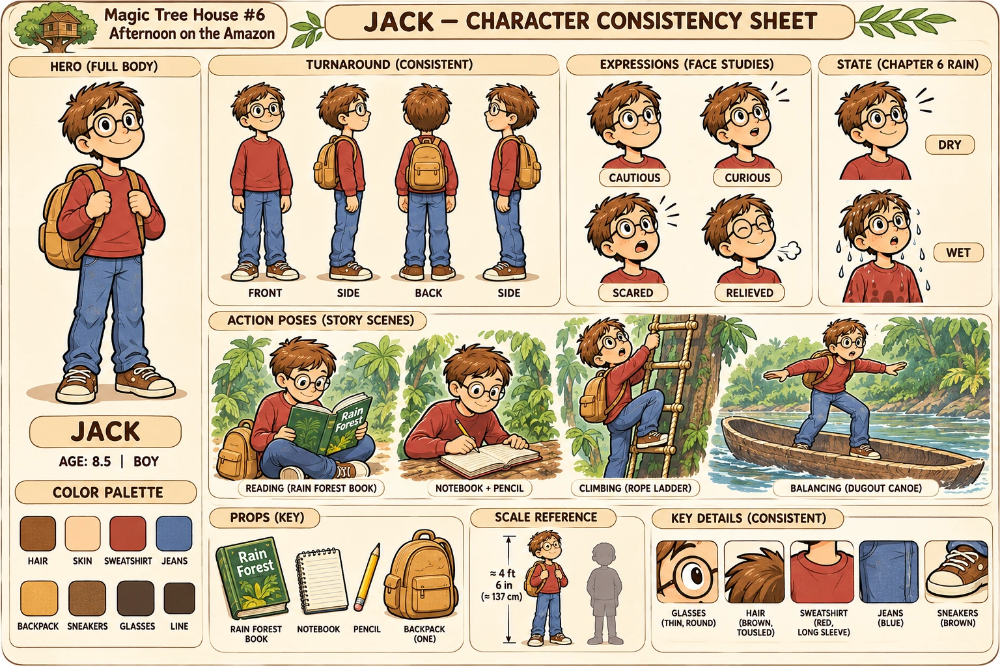
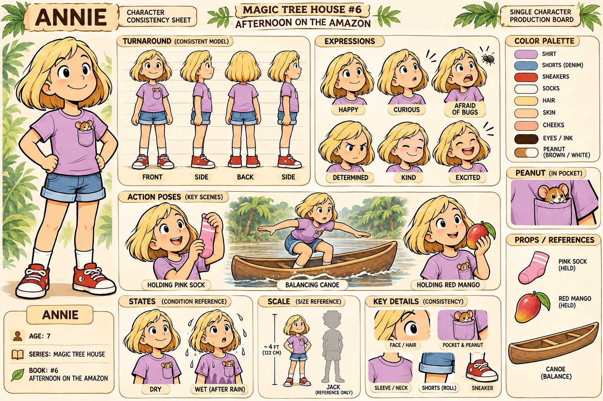
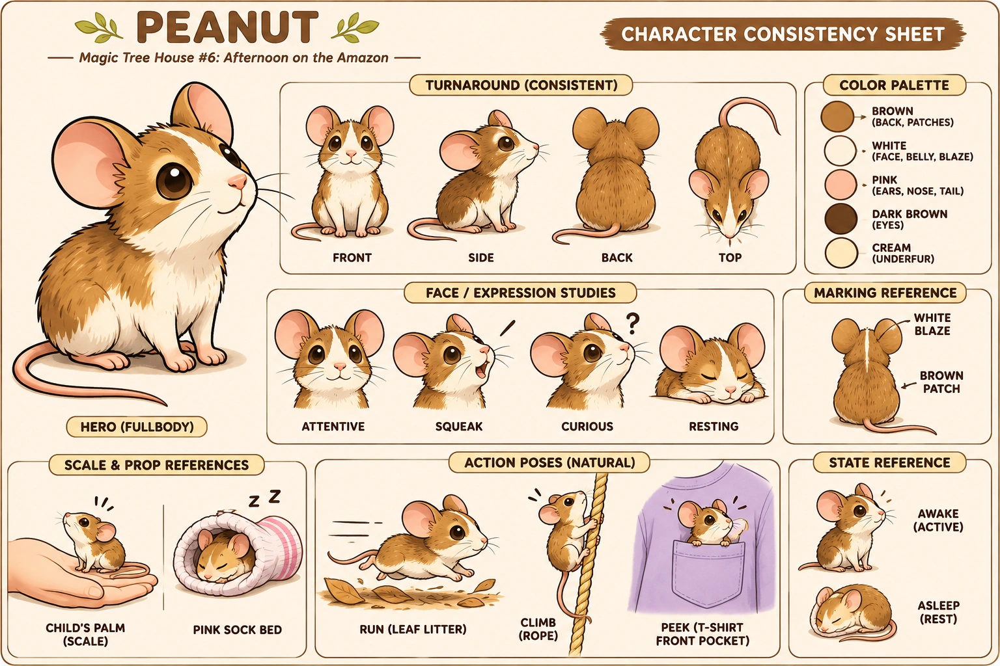
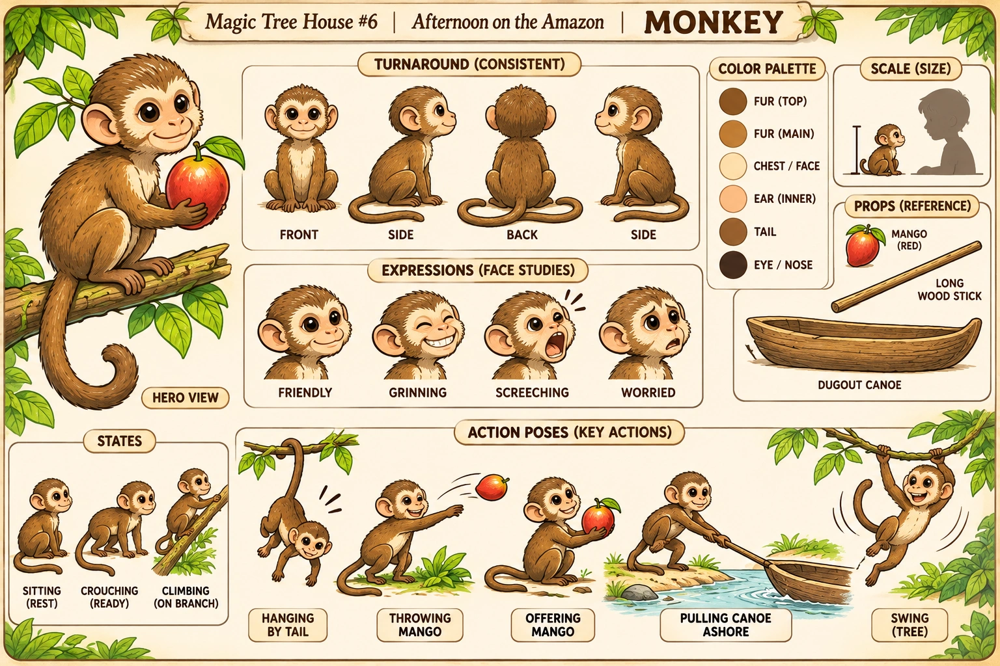
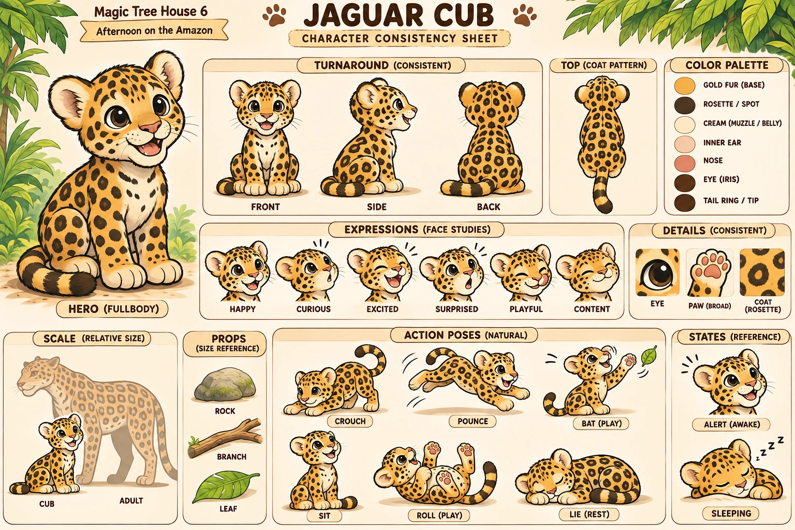
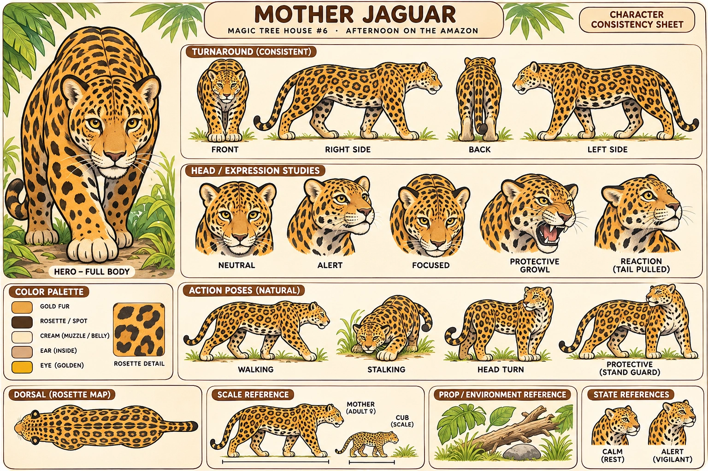
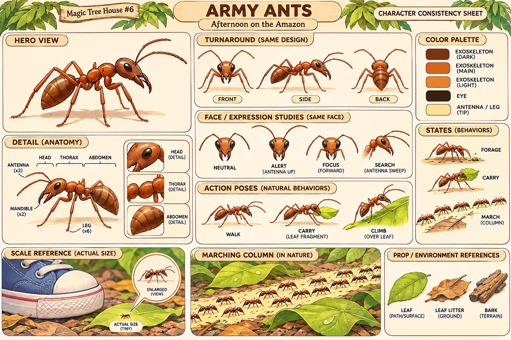
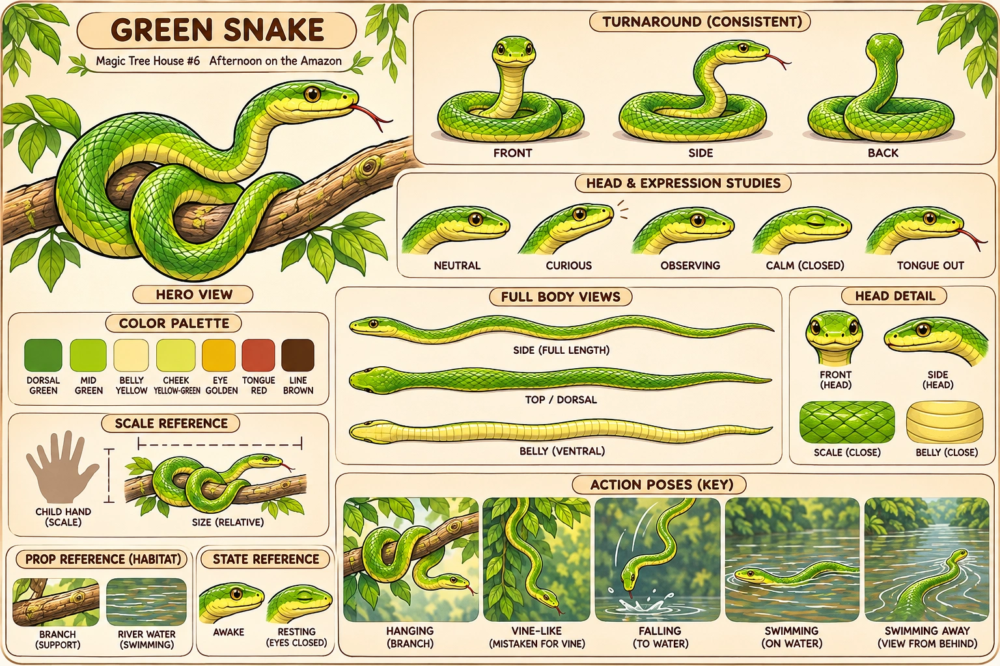
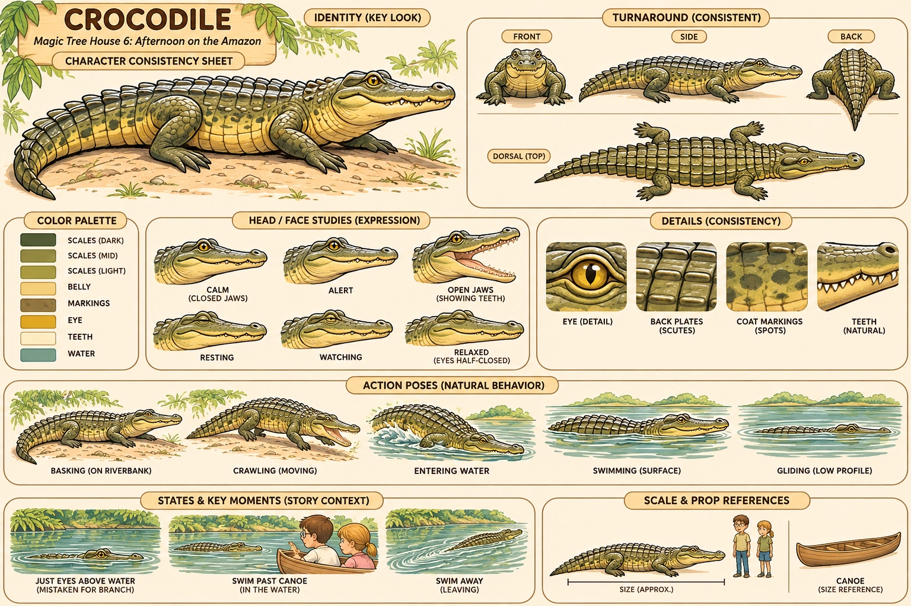
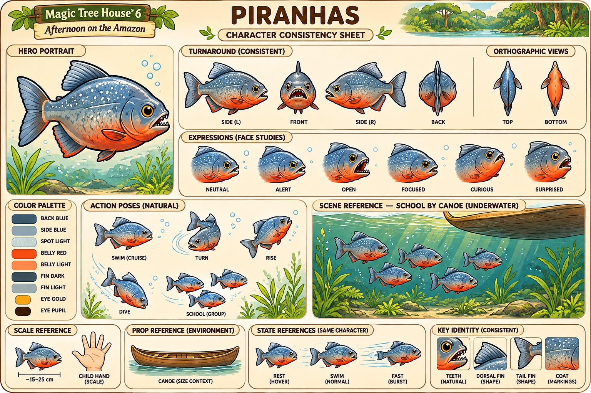
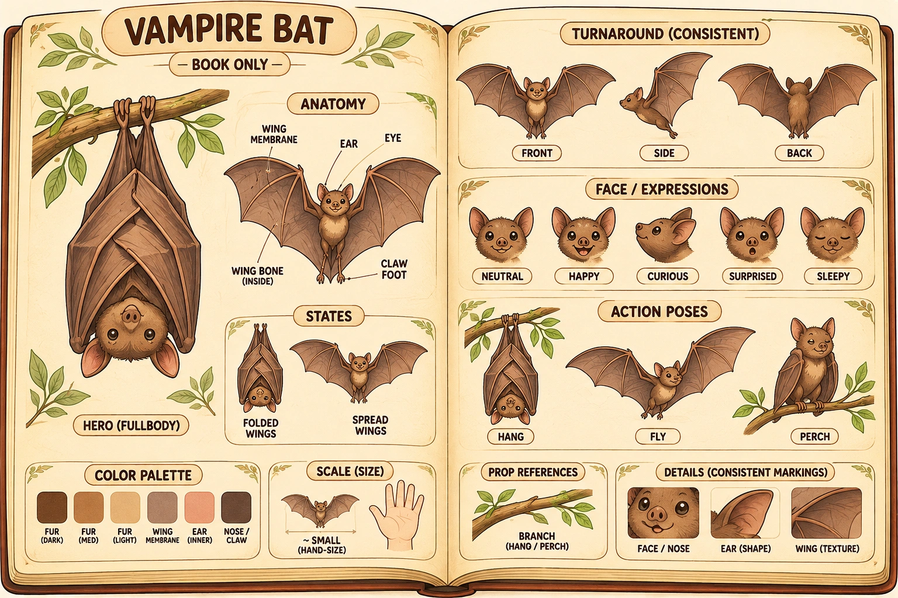
원문 사실과 제작 선택을 구분합니다. 참조 시트는 배치 생성 전에 다시 읽습니다.
1장 Peanut 분홍 양말 침대 → 2~7장 Annie 주머니 → 8장 숲바닥·밧줄 사다리 → 9~10장 나무집. 6장 후반 비 시작, 이후 젖은 복장 유지. 통나무 카누는 노가 없음. 망고는 9장에서 건네받고 10장에서 월장석 옆 바닥 M 위에 놓음. Morgan은 실물 등장하지 않음.
4권 외형을 계승한 공통 참조입니다. 젖음·의상은 6권 장면 원문을 우선합니다.

4권 외형을 계승한 공통 참조입니다. 젖음·의상은 6권 장면 원문을 우선합니다.
eight-and-a-half-year-old boy; short brown hair; large round glasses; red long-sleeve shirt; blue jeans; brown sneakers; cautious, observant posture
6권 전용 시트는 아래 이미지 목록에서 확대할 수 있습니다.
seven-year-old girl; chin-length blonde bob; lavender T-shirt; denim shorts; red sneakers; energetic, fearless posture
6권 전용 시트는 아래 이미지 목록에서 확대할 수 있습니다.
Brown-and-white mouse, big dark eyes; travels in Annie’s pocket.
6권 전용 시트는 아래 이미지 목록에서 확대할 수 있습니다.
Small brown monkey; hangs by tail; fruit is a mango, not a weapon invented beyond source.
6권 전용 시트는 아래 이미지 목록에서 확대할 수 있습니다.
Rain-forest jaguar; source-described local appearance only.
6권 전용 시트는 아래 이미지 목록에서 확대할 수 있습니다.
Swarming army ants; scale and placement follow source.
6권 전용 시트는 아래 이미지 목록에서 확대할 수 있습니다.
Large river snake; exact source image reference controls its shape.
6권 전용 시트는 아래 이미지 목록에서 확대할 수 있습니다.
River crocodile only where actually present.
6권 전용 시트는 아래 이미지 목록에서 확대할 수 있습니다.
Source river fish; never convert an imagined threat into a visible attack.
6권 전용 시트는 아래 이미지 목록에서 확대할 수 있습니다.
새끼는 금색 털·검은 반점. 어미와 새끼를 별개 개체로 고정한다. 7장에서만 실제 출현.
6권 전용 시트는 아래 이미지 목록에서 확대할 수 있습니다.
8장 책 속 그림과 설명 전용. 현장 박쥐 공격을 추가하지 않는다.
6권 전용 시트는 아래 이미지 목록에서 확대할 수 있습니다.
나비·새는 수관, 개구리·도마뱀·새의 이동은 4장 개미를 피하는 대목에 맞춘다.
6권 전용 시트는 아래 이미지 목록에서 확대할 수 있습니다.